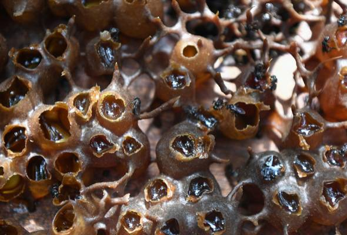
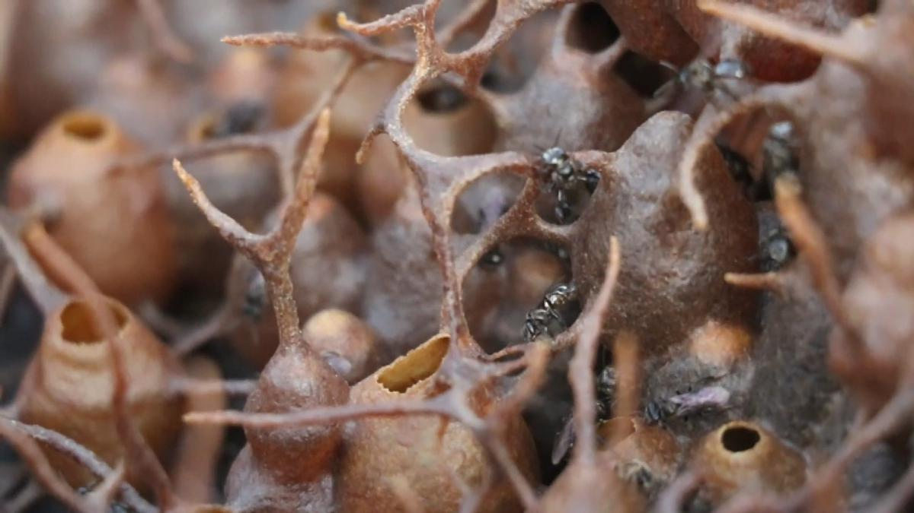
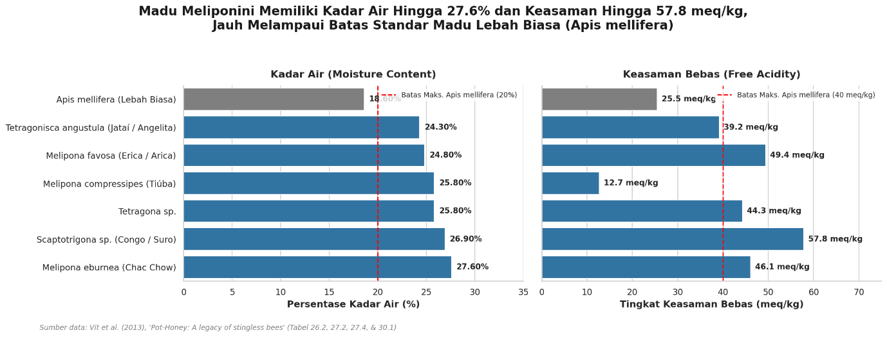

Madu pot yang dihasilkan oleh lebah tanpa sengat (Meliponini) memiliki beberapa keunikan fisik, kimia, dan organoleptik yang sangat berbeda jika dibandingkan dengan madu biasa dari lebah penyengat (Apis mellifera) yang disimpan di sarang sisir:
- Kandungan Air Lebih Tinggi dan Lebih Cair: Perbedaan utama yang paling khas adalah kandungan airnya yang jauh lebih tinggi dibandingkan dengan madu lebah biasa. Hal ini membuat madu pot secara visual memiliki kekentalan (viskositas) yang lebih rendah sehingga tampak lebih cair.
- Karakter Rasa Asam-Manis (Sour-Sweet) yang Unik: Jika madu biasa umumnya didominasi oleh rasa manis yang pekat, madu pot menawarkan perpaduan rasa manis, asam, bahkan terkadang sedikit pahit yang sangat unik. Keunikan rasa asam yang menyegarkan ini disebabkan oleh tingkat keasaman bebas (free acidity) yang jauh lebih tinggi.
- Fermentasi Alami yang Menyehatkan: Pada madu lebah biasa (A. mellifera), fermentasi dianggap sebagai cacat mutu akibat pemanenan yang terlalu cepat. Namun, pada madu pot, proses fermentasi alami oleh mikroorganisme yang berasosiasi dengan lebah (seperti bakteri asam laktat dan khamir) adalah hal yang sangat normal. Fermentasi ini menimbulkan gelembung gas dan busa halus di permukaan madu, memberikan aroma khas, dan justru meningkatkan aktivitas antioksidannya.

- Disimpan di dalam Pot Serumen (Cerumen Pots): Lebah penyengat biasa menyimpan madunya di dalam sarang yang terbuat dari lilin murni (beeswax combs). Sebaliknya, lebah tanpa sengat membangun pot-pot penyimpanan dari serumen (cerumen), yaitu campuran antara lilin lebah dan resin tanaman (propolis). Interaksi madu dengan dinding pot serumen kaya propolis ini mentransfer senyawa tanaman ke dalam madu, memberikan aroma kayu atau herbal (nest bouquet) yang khas serta memperkuat khasiat pengobatannya.
- Kandungan Senyawa Aktif Flavonoid: Penelitian menunjukkan bahwa madu pot lebah tanpa sengat jauh lebih kaya akan senyawa flavonoid glikosida dibandingkan dengan madu A. mellifera yang umumnya didominasi oleh flavonoid aglikon.
- Aktivitas Enzim Diastase yang Sangat Rendah: Madu pot secara alami memiliki aktivitas enzim diastase yang sangat rendah dibandingkan madu biasa. Oleh karena itu, standar keaktifan enzim diastase tidak dapat dijadikan parameter untuk menilai kesegaran atau pemanasan pada madu pot.

Mau coba madu klanceng asli? Chat kami langsung di WhatsApp atau lihat pilihan kemasan di sini.